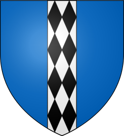
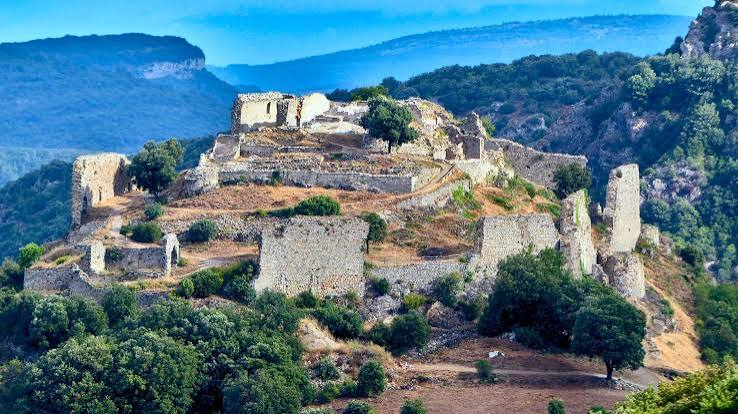

Château de
TermesLe plus long siège de la croisade des Albigeois, en 1210


⟹ Sites Emblématiques ⟸

Au cœur des Hautes-Corbières, le château de Termes occupe un éperon rocheux dominant les vertigineuses gorges du Termenet. Une première fortification est attestée dès les environs du Xe siècle et le site apparaît dans les textes médiévaux à partir du XIe. Sa position, à la tête du Termenès, lui permet de contrôler un vaste territoire de villages, de voies et de vallées. Au XIIe siècle, un habitat fortifié — un castrum — s'étend sur les pentes sous le château.
Les seigneurs de Termes figurent parmi les grands barons du Languedoc. Vassaux des vicomtes Trencavel de Carcassonne, Béziers et Albi, ils disposent d'une puissance territoriale considérable. La famille est également connue pour sa proximité avec le catharisme. Au début du XIIIe siècle, Raimond de Termes protège des croyants et des religieux dissidents ; les sources hostiles aux cathares soulignent même l'éloignement du seigneur à l'égard de l'Église romaine. Cette situation fait de Termes une cible majeure de la croisade contre les Albigeois.

Après la prise de Carcassonne en 1209 et celle de Minerve en juillet 1210, Simon de Montfort veut réduire les dernières grandes places qui contestent son autorité. L'attaque de Cabaret ayant échoué, il se tourne vers Termes. Le siège commence au début du mois d'août 1210. La forteresse est réputée presque imprenable : falaises, ravins et pentes abruptes protègent naturellement le plateau, tandis que Raimond de Termes dispose d'une garnison nombreuse et de spécialistes capables de répondre aux machines de guerre croisées.
Le siège de 1210 devient l'un des épisodes les plus longs et les mieux documentés de la première phase de la croisade. Les croisés doivent transporter et installer mangonneaux et pierrières dans un relief difficile. Les défenseurs ripostent avec leurs propres machines. Un ouvrage avancé, le Termenet, protège un point essentiel de l'accès et de l'approvisionnement en eau ; sa conquête oblige les assiégés à dépendre davantage des citernes du château. Les chroniqueurs, notamment Pierre des Vaux-de-Cernay et la Chanson de la croisade albigeoise, ont laissé des récits détaillés de ces affrontements.
À l'automne, une sécheresse prolongée épuise les réserves d'eau et semble devoir provoquer la capitulation. Un violent orage remplit pourtant les récipients et les citernes, donnant un répit spectaculaire aux défenseurs. Cette eau, vraisemblablement contaminée après avoir été recueillie dans de mauvaises conditions, est suivie d'une épidémie de dysenterie. La garnison, affaiblie, tente finalement d'abandonner la place de nuit. Les fuyards sont poursuivis et Raimond de Termes est capturé. Le château tombe le 23 novembre 1210, après environ seize semaines de résistance.
La chute de Termes a un retentissement considérable. Une forteresse que beaucoup jugeaient inexpugnable vient de céder, ce qui renforce momentanément l'autorité de Simon de Montfort dans la région. Raimond de Termes est emprisonné et meurt en captivité. Son fils Olivier de Termes, encore très jeune en 1210, deviendra l'un des personnages les plus étonnants du XIIIe siècle languedocien : d'abord adversaire de la monarchie capétienne et compagnon des révoltes méridionales, il se ralliera ensuite à Louis IX, participera aux croisades d'Orient et deviendra un fidèle serviteur du roi.
La domination croisée n'est toutefois pas immédiatement définitive. Dans les années 1223-1226, à la faveur du recul des Montfort, Olivier et les siens reprennent possession de Termes. La nouvelle croisade royale menée par Louis VIII et la consolidation de l'autorité capétienne changent à nouveau la situation. En 1228, Termes passe durablement sous contrôle du roi de France et devient une forteresse royale.
La monarchie transforme profondément le site. L'ancien village castral installé sous la forteresse est détruit vers le milieu du XIIIe siècle et la population se fixe plus bas, à l'emplacement du village actuel. Le château est reconstruit et adapté aux normes de l'architecture militaire royale. Après le traité de Corbeil de 1258, il s'intègre au réseau des grandes places chargées de contrôler le Languedoc nouvellement conquis et de surveiller la frontière avec le royaume d'Aragon. Il est traditionnellement associé à Aguilar, Peyrepertuse, Puilaurens et Quéribus sous le nom des « cinq fils de Carcassonne ».
Pendant près de quatre siècles, une petite garnison royale — souvent de l'ordre d'une quinzaine d'hommes — entretient et garde Termes. Sa fonction n'est plus de protéger une seigneurie indépendante mais de tenir le territoire au nom du roi. La forteresse connaît des réparations, des adaptations et les effets du progrès de l'artillerie. Toutefois, à partir du XVIe et surtout du XVIIe siècle, son entretien devient coûteux tandis que son utilité stratégique diminue.
Dans le contexte troublé de la Fronde et des guerres franco-espagnoles, le pouvoir royal décide finalement de neutraliser la place. Le château est volontairement démantelé en 1654, après une opération de destruction engagée l'année précédente. Quelques années plus tard, le traité des Pyrénées de 1659 repousse la frontière franco-espagnole vers le sud et confirme définitivement la perte de son rôle militaire. Les ruines servent ensuite de carrière et la végétation recouvre progressivement une partie du site.
Longtemps oublié, Termes fait l'objet d'un regain d'intérêt au XXe siècle. La commune acquiert le château en 1988 et le monument est classé au titre des Monuments historiques en 1989. Depuis, fouilles archéologiques, consolidations et études permettent de mieux comprendre l'organisation de la forteresse médiévale, le castrum disparu et les différentes phases de reconstruction royale. Termes est ainsi un site essentiel pour lire toute l'histoire politique du Languedoc médiéval : puissance seigneuriale, implantation cathare, violence de la croisade, conquête capétienne, frontière avec l'Aragon puis démantèlement à l'époque moderne.
Le château de Termes domine un paysage sauvage de gorges calcaires, taillées par le ruisseau du Termenet, aux portes du massif des Corbières. En contrebas, la roche a été creusée par les eaux en vasques et marmites naturelles, formant un site à la fois défensif et pittoresque, aujourd'hui prisé des randonneurs.
Le siège de Termes est l'un des épisodes les plus marquants de la croisade contre les Albigeois : près de quatre mois de résistance, entre soif, maladies et assauts répétés, avant que la place ne tombe en novembre 1210.
— Exposition permanente du château de TermesLa garrigue et les chênes verts qui couvrent aujourd'hui les pentes des gorges du Termenet abritent une faune discrète — chevreuils, rapaces, orchidées sauvages au printemps — dans un site classé où l'histoire militaire se lit encore dans la topographie même du terrain.
Village de Termes village médiéval au pied de la forteresse, point de départ de la visite.
Villerouge-Termenès château cathare où le dernier « parfait » Guilhem Bélibaste fut brûlé en 1321.
Gorges du Termenet vasques naturelles et cascades, appréciées pour la baignade en été.
Lagrasse l'un des Plus Beaux Villages de France, avec son abbaye bénédictine, à courte distance.